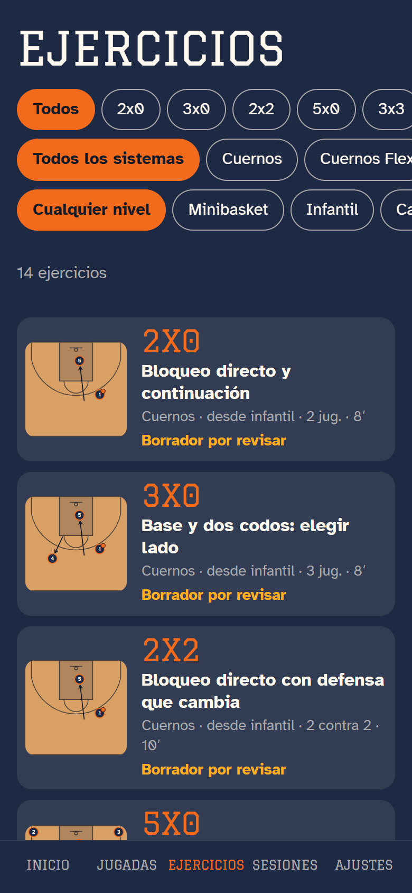
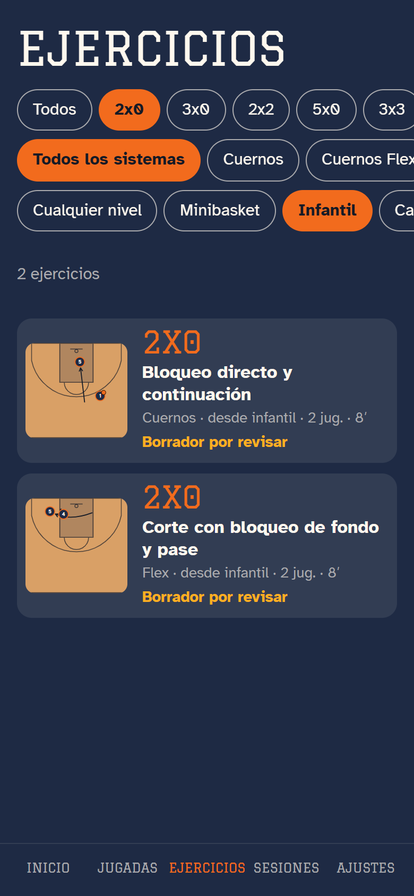
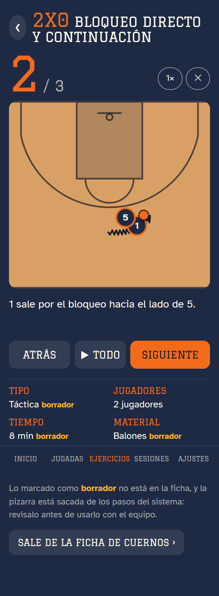
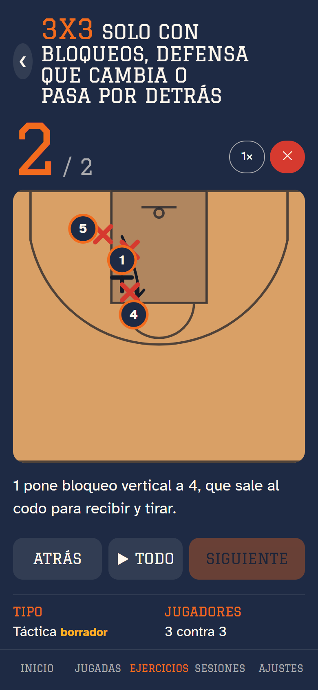

Ejercicios y sesiones. Cada vuelta del tramo añade una entrada arriba. Las entradas del Tramo 1 y del Tramo 3 siguen en la página de bocetos de siempre.
29/10 · Tramo 2 · Paso 2: ejercicios
Ya está la biblioteca de ejercicios

Pestaña nueva con los 14 ejercicios de las fichas

Filtros: equipo infantil y solo 2x0

Al abrirlo, la pizarra grande y animada (solo el 1 y el 5)

Un 3x3 sale con su defensa; se puede quitar
Hecho
Pestaña Ejercicios con la lista y los filtros (opción A): formato, sistema y nivel del equipo. Un equipo infantil no ve los de Cuernos Flex, que es desde cadete.
Al tocar uno se abre grande: pizarra animada con Atrás, Todo y Siguiente, velocidad y defensa (sale puesta en 2x2, 3x3 y 5x5).
La pizarra es la del sistema, recortada a los pasos y jugadores del ejercicio: en el 2x0 de Cuernos solo están el 1 y el 5.
Datos: tipo, jugadores, tiempo, material y nivel. Lo que no viene en la ficha está marcado como borrador.
Los ejercicios de Inicio ya abren su ficha, y «Ver todas» lleva a la pestaña.
9 pruebas nuevas (40 en total) y la app compila sin errores.
Para revisar
Todo es borrador: el tipo (todos «Táctica»), el tiempo (8 min sin defensa, 10 con defensa, 15 en 5x5), el material (balones, y petos si hay defensa) y qué pasos enseña cada pizarra.
Algunas fichas no dicen quién pasa: en el 2x0 del Flex y en el 3x0 de Cuernos Flex el balón lo tiene alguien que no está en el ejercicio, así que no se dibuja.
En el paso 2 del 2x0 de Cuernos, el 1 y el 5 quedan casi uno encima del otro (así está en el sistema).
Aún no hay ejercicios de técnica individual, defensa ni drills: no están en ninguna ficha. En las sesiones podrás añadir los tuyos.
29/10 · Tramo 2 · Paso 1: diseño
Ejercicios y sesiones: elige cómo
Elegido por Adam: biblioteca A y sesiones B, con un color por tipo (táctica, técnica individual, defensa y drills)
Por ejemplo, «biblioteca A, sesiones C». Se pueden mezclar ideas.
Lo que sale de las fichas y lo que no: las fichas de sistemas/ dan el formato y una línea por ejercicio (por ejemplo, «2x0 bloqueo directo y continuación»). El nivel sale del sistema y el número de jugadores, del formato. El tiempo, el material y la pizarra de cada ejercicio no están escritos: saldrán marcados como borrador para que los revises (la pizarra, sacada de los pasos del sistema, solo con los jugadores del ejercicio). El calentamiento y la vuelta a la calma tampoco están en las fichas: quedan como hueco o como ejercicio tuyo.
Biblioteca de ejercicios
A · Lista con filtros
Encuentras uno concreto en dos toques: formato, sistema y nivel arriba (como Sportplan).Caben cinco o seis en pantalla; al tocar uno se abre con su pizarra animada.En la lista, la pizarra es pequeña: no se ve el movimiento hasta abrirlo.
B · Una tarjeta grande
Cada ejercicio con su pizarra animada a lo grande; deslizas hacia arriba para el siguiente (como Elite Hoops).Botón directo «A la sesión».Para buscar uno concreto hay que pasar muchos; los filtros quedan escondidos.
C · Escalera por sistema
Enseña la progresión de cada sistema, de 2x0 a 5x5, tal y como está en la ficha.Un botón monta la sesión entera de ese sistema.Lo que no es de un sistema (tiro, calentamiento) no tiene un sitio claro.
Planificador de sesiones
A · Lista que se ordena
La más rápida: arrastras para cambiar el orden y tocas − / + para los minutos (como The Hoops Geek).El total y la barra avisan si te pasas de la hora.No separa las partes del entrenamiento.
B · Línea de tiempo
Ves de un vistazo cómo se reparte la hora y dónde quedan huecos libres.Estiras un bloque para darle más minutos.Los ejercicios de 5 minutos quedan finos y cuesta tocarlos.
C · Por partes
Ordena el entrenamiento como se enseña: calentamiento, parte principal y vuelta a la calma.Compara el tiempo que querías con el que llevas en cada parte.Más toques para montarla y más rígida.
En las tres: arriba eliges el equipo (por categoría, sin nombres de jugadores) y cada equipo guarda varias sesiones. Mi recomendación: biblioteca A (al abrir un ejercicio se ve grande, como en B) y sesiones A, que es la que menos estorba con prisa en la banda.